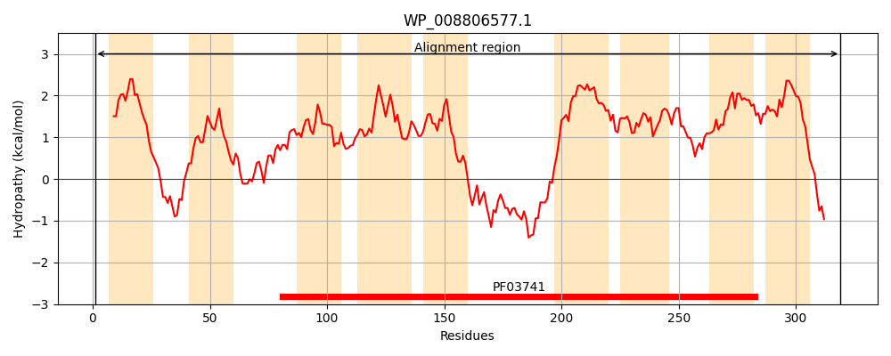
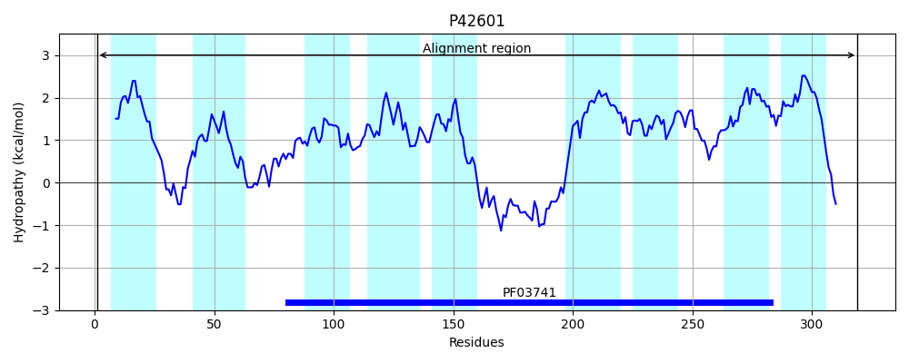
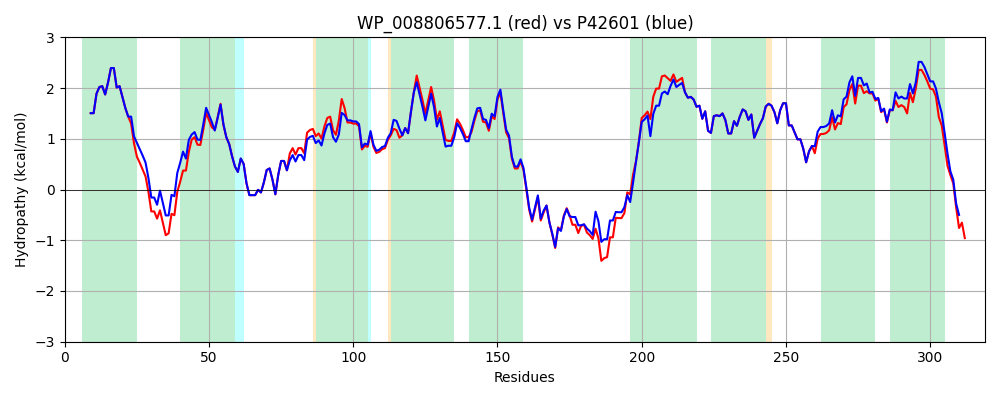

Hit Accession: P42601
Hit TCID: 2.A.109.1.7
Hit Description: gnl|BL_ORD_ID|10474 gnl|TC-DB|P42601|2.A.109.1.7 Inner membrane protein alx OS=Escherichia coli (strain K12) GN=alx PE=1 SV=2
Mach Len: 319
e:0.000000
Query TMS Count : 9
Hit TMS Count: 9
TMS-Overlap Score: 9.300000
Predicted Substrates:None
BLAST Alignment:
Score: 1485 , Bit scores: 576 bits, E-value: 0.0e+00, Alignment length: 319, Percentage identity: 89
Query: 1 MNTVGTPLLWGGFAVVVAIMLAIDLLLQGRRGSHSMTMKQAAGWSILWVTLSLLFNAAFWWYLVQTQGRAVADPQALAFLTGYLIEKALAVDNVFVWLMLFSYFAVPPALQRRVLVYGVLGAIVLRTIMIFAGSWLISQFDWLLYVFGAFLLFTGVKMALAKEDDSGIGDKPLVRWIRSHLRMTDKIESERFFTRKNGVLFATPLLLVLILVELSDVIFAVDSIPAIFAVTTDPFIVLTSNLFAILGLRAMYFLLAGVAERFSMLKYGLSVILVFIGVKMLIVDFYHIPVAISLGVVGGILAVTLLINAWVNKQHDKQR 319
MNTVGTPLLWGGFAVVVAIMLAIDLLLQGRRG+H+MTMKQAA WS++WVTLSLLFNAAFWWYLVQT+GRAVADPQALAFLTGYLIEK+LAVDNVFVWLMLFSYF+VP ALQRRVLVYGVLGAIVLRTIMIF GSWLISQFDW+LY+FGAFLLFTGVKMALA ED+SGIGDKPLVRW+R HLRMTD I++E FF RKNG+L+ATPL+LVLILVELSDVIFAVDSIPAIFAVTTDPFIVLTSNLFAILGLRAMYFLLAGVAERFSMLKYGL+VILVFIG+KMLIVDFYHIP+A+SLGVV GIL +T +INAWVN +HDKQR
Sbjct: 1 MNTVGTPLLWGGFAVVVAIMLAIDLLLQGRRGAHAMTMKQAAAWSLVWVTLSLLFNAAFWWYLVQTEGRAVADPQALAFLTGYLIEKSLAVDNVFVWLMLFSYFSVPAALQRRVLVYGVLGAIVLRTIMIFTGSWLISQFDWILYIFGAFLLFTGVKMALAHEDESGIGDKPLVRWLRGHLRMTDTIDNEHFFVRKNGLLYATPLMLVLILVELSDVIFAVDSIPAIFAVTTDPFIVLTSNLFAILGLRAMYFLLAGVAERFSMLKYGLAVILVFIGIKMLIVDFYHIPIAVSLGVVFGILVMTFIINAWVNYRHDKQR 319 | Protein Hydropathy Plots: |
|---|
|  |  |
Pairwise Alignment-Hydropathy Plot:
|
|---|
|  |